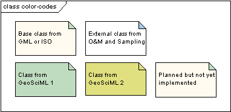

Package GeoSciML
Root package for GeoSciML v 2.0 GeoSciML is an application schema that specifies a set of feature-types and supporting structures for information used in the solid-earth geosciences. GeoSciML v2 is scoped approximately to the information required to construct geologic maps. "Map" is interpreted broadly, and not constrained to conventional 2-D semi-horizontal cartography, so the GeoSciML information structures also support representation of the distribution of geologic features on sections, along curvilinear-traverses and boreholes, within volumetric samples, etc. GeoSciML v2 is primarily concerned with "interpreted" geology (units, structures, etc), but links to external schemas for the descriptions of observational data. GeoSciML is factored into a set of sub-packages.
UML Diagram: color-codes
